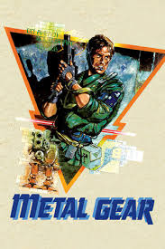

El año es 1995. La unidad de fuerzas especiales FOXHOUND recibe información de que en Outer Heaven —una nación fortaleza no identificada en el sur de África— se está desarrollando un arma de destrucción masiva sin precedentes: el Metal Gear.
El agente veterano Gray Fox es enviado de exploración, pero pierde el contacto. El comandante Big Boss ordena al agente novato Solid Snake infiltrarse en Outer Heaven para rescatar a Gray Fox y destruir el Metal Gear.
A lo largo de su misión, Snake descubre que Big Boss —su propio comandante— es en realidad el líder de Outer Heaven, y que la misión fue diseñada para que Snake fracasara. Superando esta traición, Snake destruye el Metal Gear y enfrenta a Big Boss directamente.
Agente novato de FOXHOUND enviado a destruir el Metal Gear TX-55. Protagonista de la saga.
Comandante de FOXHOUND y fundador secreto de Outer Heaven. El antagonista revelado.
Agente capturado en Outer Heaven. Rescatable durante la misión.
Instructor de supervivencia que asiste a Snake vía radio.
Metal Gear introdujo mecánicas que serían estándar del género: visión de cono de los enemigos, sistema de alertas, comunicación por radio, y el énfasis en evadir en lugar de eliminar.
Evita ser detectado por las cámaras y la línea de visión de los guardias para completar la misión.
Snake se comunica constantemente con el cuartel general para recibir instrucciones y pistas.
Rescatar prisioneros otorga mejoras y permite avanzar en la historia.
Armas y municiones escasas que obligan al jugador a gestionar sus recursos con cuidado.
Metal Gear fue aclamado por su original propuesta de sigilo en un género dominado por la acción directa. La versión MSX2 es considerada la canónica; la de NES difiere significativamente en diseño y fue desarrollada sin la supervisión de Kojima.
Su legado es invaluable: sentó las bases del género de sigilo táctico y es el punto de partida de una de las franquicias más influyentes de la historia de los videojuegos.
🐍 Kojima estuvo a punto de no poder dirigir el juego, ya que le asignaron el proyecto como tarea secundaria.
🎮 La versión de NES fue desarrollada por otro equipo sin la participación de Kojima, lo que resultó en cambios significativos respecto a la versión original MSX2.
🤖 El Metal Gear TX-55 es el primer Metal Gear de la saga; su nombre hace referencia a que usa propulsión bípeda ("two-legged").
📻 El sistema de radios para comunicarse con el cuartel fue una novedad que Kojima incorporó para dar sensación de misión real.